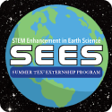

Vishal Muthuraja


Strengths
Python ●●●●●
Git ●●●●●
Mongo ●●●●●
Linux ◗●●●●
HTML/CSS/JS ●●●●
Hardware ●●●●
Business ●●●●
SQL ◗●●●
Java ●●●
About Me
I am a current senior attending Foothill High School. I am currently pursuing the 4-Year PLTW Engineering pathway, but also have a strong interest in computer science. I plan to major in computer science or aerospace engineering and hope to either work for tech startup in the Bay Area or start my own. Things that influenced my decision includes the many field trips and guest speakers that my engineering classes showed me, such as the Manufactuing Day field trip, and the field trip to the Oakland airport. In my summer, I interned at Cisco Systems, where I developed tools to increase the efficiency of router configuration. I had a virtual internship at NASA and UT Austin's SEES program, and focused my research in the spread of COVID-19, and its analysis with data science.
Experiences
Nize Systems
SVP of Engineering
AUGUST 2018 -
Nize Systems offers educational management tools, SaaS administrative technologies, and custom solutions tailored to organizational needs. As the SVP of Engineering of Nize Systems, I build custom tools utilizing modern technology to streamline K12 Systems.

NASA SEES
Summer Intern
MAY 2020 - JULY 2020
I worked with The University of Texas at Austin and NASA Texas Space Grant to conduct authentic research using NASA data and analysis tools for COVID-19 tracing. My team and I analyzed the spread of COVID-19 and presented methods to prevent the spread and efficiently track the spread of the virus.
Cisco Systems
Summer Intern
JUNE 2019 - JULY 2019
At Cisco Systems, I worked with a team that had many years of experience with computer networking. I learned a lot about software and security practices, and gained networking and work experience at Cisco. I developed tools to make router configuration more efficient in the team.
theCoderSchool
Code Coach
DECEMBER 2019 -
I spend 7-10 hours every week helping and tutoring young students in coding. Inspired by my love for programming, I love to give back to my community by helping spark others’ interests for programming.
GigaHacks
Co-Founder and President of Atendee Affairs
OCTOBER 2019 -
Highschoolers conducting hackathons to help stimulate the love of coding in many people of a variety of ages. Learn more about our past events by visiting our website.
MATHCOUNTS
Secretary and Coach
AUGUST 2017 -
As a coach, I teach advanced math at the Hart Middle School Mathcounts Club (5th to 8th graders). The club has competed and won many awards in the MATHCOUNTS competitions and other olympiads.